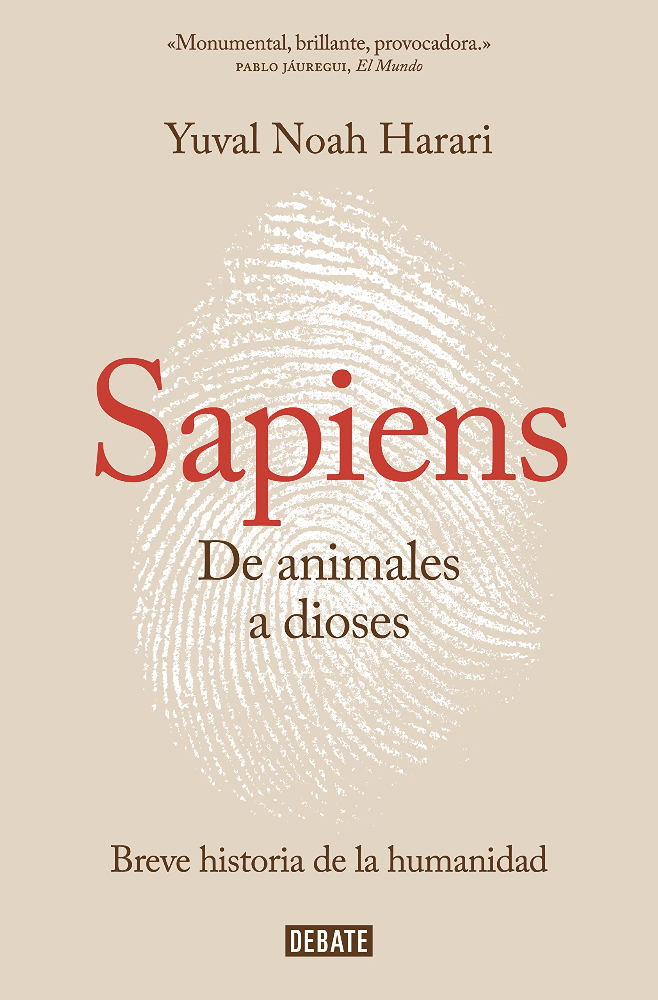
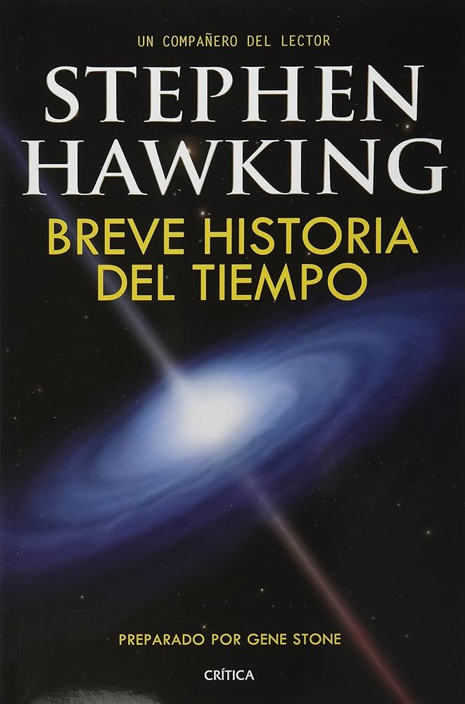
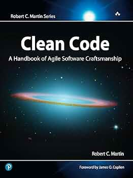

El Principito
Una historia breve, profunda y llena de reflexión.
Un espacio digital para explorar nuevas lecturas y elevar tu conocimiento
Descubre libros, autores y categorías pensadas para estudiantes, lectores curiosos y personas que buscan aprender algo nuevo cada día.
Explorar catálogo

Una selección de títulos para comenzar tu recorrido por la biblioteca.
Una historia breve, profunda y llena de reflexión.

Una mirada accesible al universo, el tiempo y la ciencia.

Un libro ideal para mejorar la forma de escribir código.
Contenido pensado para acercarte a nuevas ideas y temas de lectura.
Explora libros que apoyan el aprendizaje en áreas como ciencia, tecnología, historia y literatura.
Consulta autores reconocidos y conoce las obras disponibles dentro del catálogo digital.
Navega por categorías para encontrar libros relacionados con tus intereses personales o académicos.